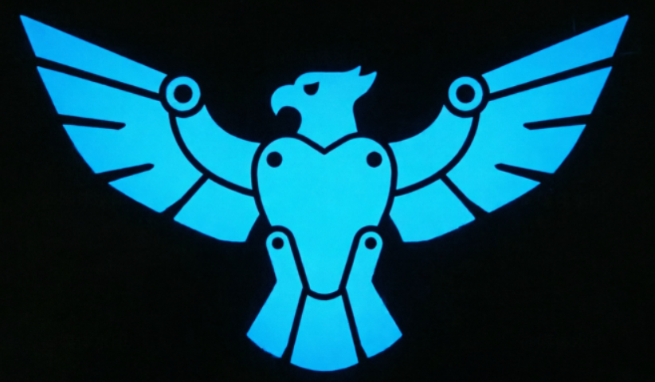

OmniLAMo
online
🌐
☰
🚀
OmniLAMo
Твой личный ИИ-помощник.
Общается, помогает с уроками и выполняет команды.
Начать
Уже есть аккаунт?
Войти
💡 После входа напиши /help
🎤
➤
📝
🔐
🙉
🔊
🍅
🦔
📄
📥
📎
← Назад
Ёжик
✏️
Ёжик сам зовёт поговорить
✿
ящик
сидит в кресле и ждёт
🔊 Голос
🎤
➤
✕
❓ Помощь
➕ Добавить задание
📋 Мои задания
🗑️ Очистить чат
🚪 Выйти
🌐 Выбери язык
Закрыть
🔐 Добавить сайт
Ссылка на сайт
Название (как показывать)
Логин
Пароль
Сохранить
Закрыть
📋 Сохранённые сайты
🍅 Помидор
25:00
Работа
25
15
5
Старт
Сброс
Работа 25 минут, перерыв 5. Таймер идёт даже при закрытом окне — кнопка 🍅 подсвечивается.
Закрыть
📄 Шпаргалка по теме
Тема
Сделать
Закрыть
📥 Скачать файл
Ссылка на файл
Скачать
Файл качает сервер и кладёт в папку downloads рядом с собой — ссылка должна быть прямой, http или https.
Закрыть